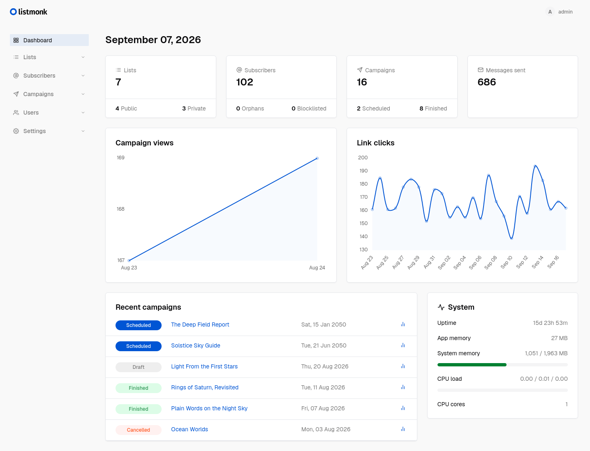
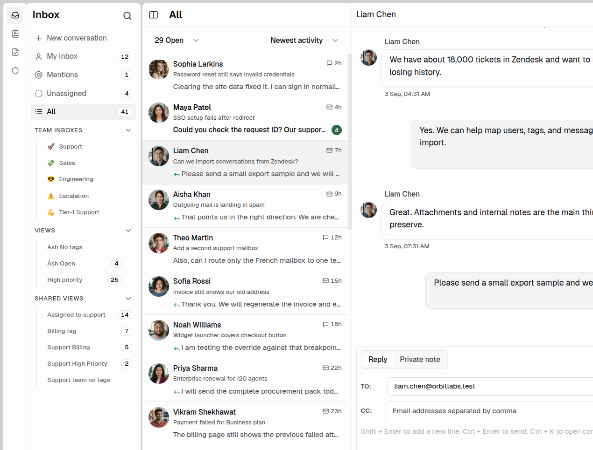
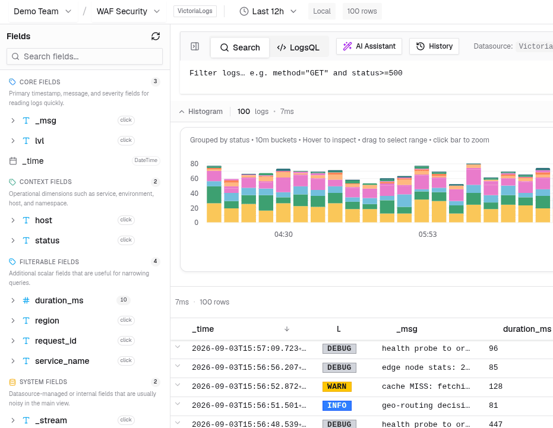
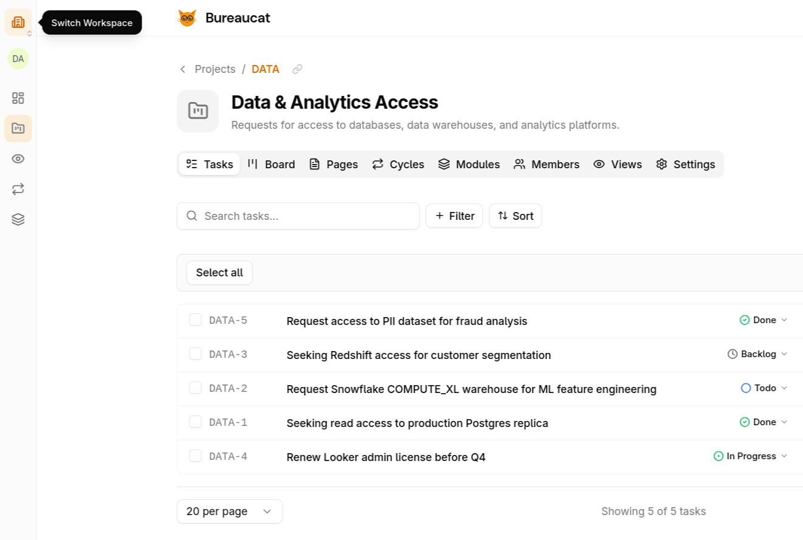

listmonk
High performance, self-hosted newsletter and mailing list manager with a modern dashboard. Single binary app.
Named after after 4th Cross JP Nagar, the Bengaluru, street from where we started hacking.
Full-featured, self-hosted applications ready to run out of the box.

High performance, self-hosted newsletter and mailing list manager with a modern dashboard. Single binary app.

Open source, self-hosted omnichannel customer support desk. Live chat, email, and more in a single binary.

Lightweight, single-binary log analytics interface for ClickHouse, focused on high-performance querying and visualization.

A no-nonsense, open source self-service workflow execution platform.
An open-source, self-hosted WhatsApp integration and automation platform.
An open source osquery manager for fleet-wide endpoint visibility.
Every project listed here is software we run in production at 4th Cross Labs. We build in the open because good infrastructure should be accessible — not locked behind enterprise pricing.
Every app ships as a compact, dependency-free binary you run on your own infrastructure.
We run each project in production. If it breaks for you, it breaks for us too.
Apache 2.0, MIT, AGPL — pick what works for your use case.
Infrastructure primitives, proxies, and developer tools.
Distributed job server for queuing and executing heavy SQL read jobs asynchronously. Supports MySQL, Postgres, ClickHouse.
A blob store based on SQLite, compatible with the Redis protocol.
Native rich content runtime for Flutter apps, with HTML rendering, trusted JSON documents, and live content patches.
High performance and minimalist SMTP server.
Simple, extremely lightweight, extensible configuration management library for Go. Supports JSON, TOML, YAML, env, command line, file, S3 etc. Alternative to viper.
A background jobs library for Go that allows pluggable brokers/store for distribution.